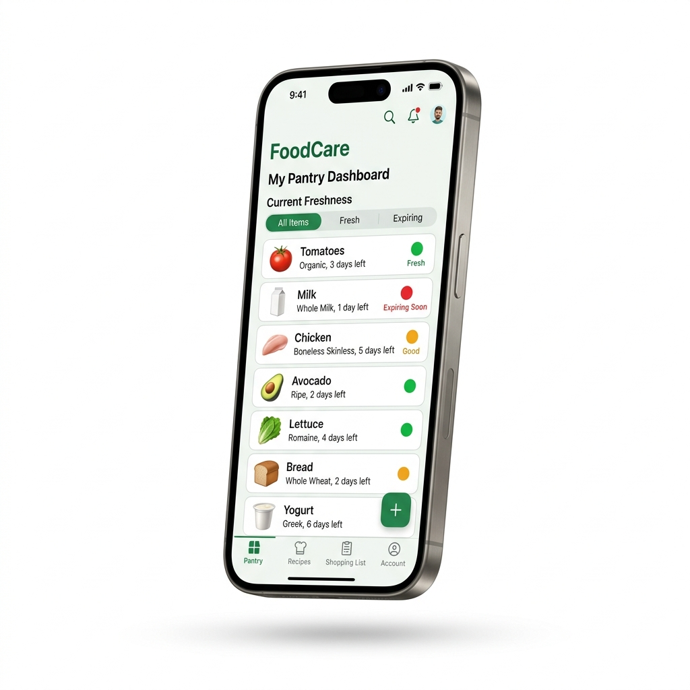
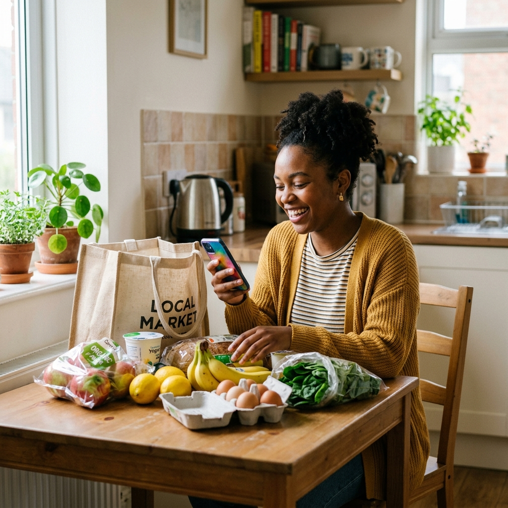
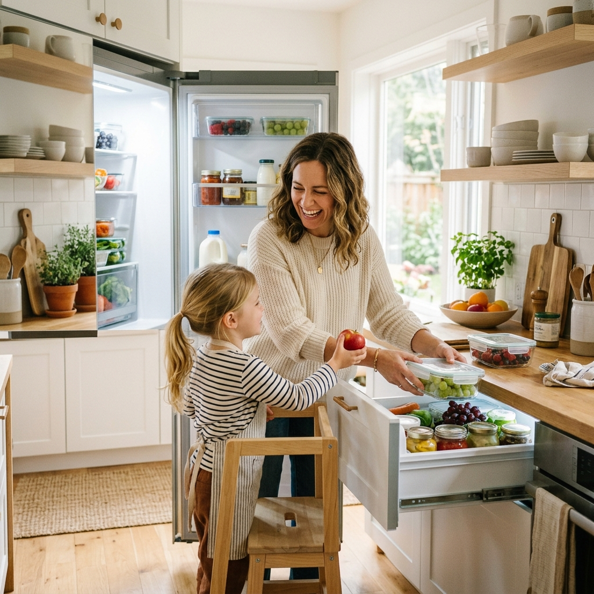
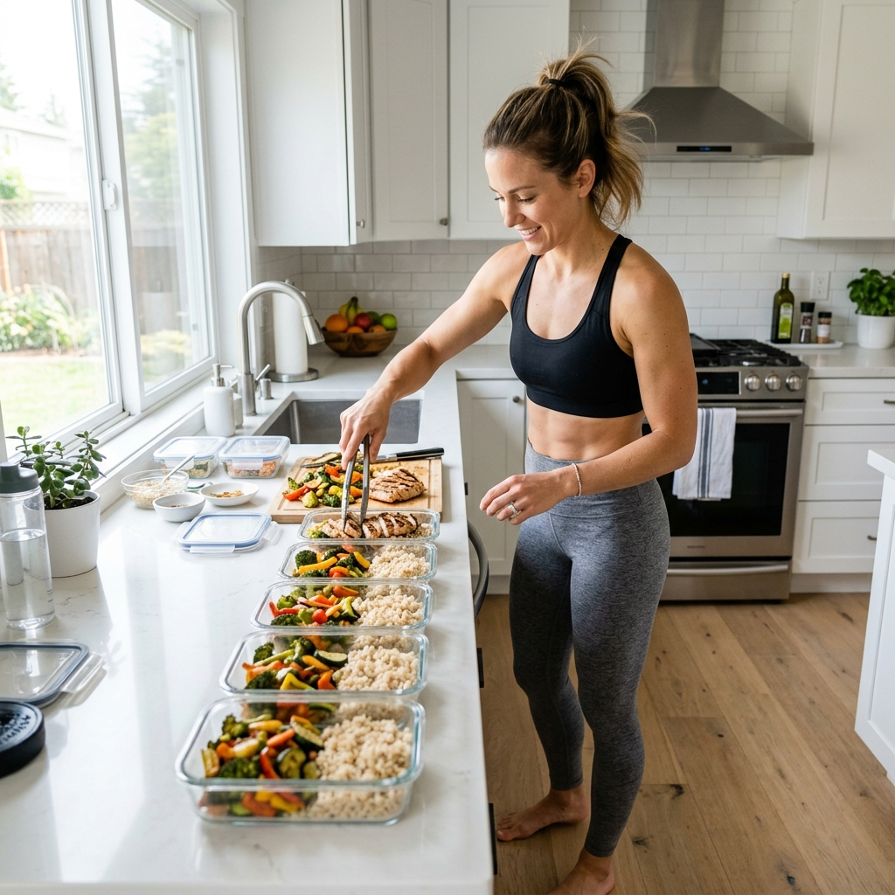

Gestiona tus alimentos, recibe alertas antes de que caduquen y descubre recetas con lo que ya tienes. Únete a FoodCare.

Descubre en un minuto cómo nuestra app te ayuda a ahorrar dinero y reducir el desperdicio de alimentos.
Todo lo que necesitas para gestionar tu cocina de forma inteligente y sostenible.
Recibe notificaciones anticipadas antes de que la comida se eche a perder. Configura el tiempo de alerta según tus preferencias y nunca más dejes caducar un alimento.
⭐ PopularSistema de semáforo intuitivo para saber qué consumir primero de un vistazo. Verde, ámbar o rojo: prioriza sin complicaciones.
Sugerencias automáticas de recetas para usar los ingredientes próximos a vencer. Cocina delicioso, reduce el desperdicio y ahorra dinero al mismo tiempo.
Etiqueta digitalmente tus tuppers preparados y haz seguimiento de su duración. Controla tus macros, fechas y porciones con alertas personalizadas para cada recipiente.
🔥 EsencialAgrega productos a tu despensa al instante escaneando códigos de barras o tickets de compra. Nuestra inteligencia artificial reconoce automáticamente cada artículo y registra su fecha de caducidad.
✨ NuevoVisualiza tu contribución ambiental en tiempo real. Conoce cuántos kilos de CO₂ has evitado, cuántos alimentos has salvado y tu huella positiva acumulada.
🌍 EcoJuntos estamos marcando una verdadera diferencia. Estas son las métricas reales de la comunidad FoodCare.
Empieza gratis y escala a medida que tus necesidades crezcan. Sin compromisos.
Diseñada para adaptarse a tu estilo de vida, sin importar si vives solo, en familia o eres un atleta disciplinado.

🎓 UniversitariosOrganiza tus compras y haz que tu presupuesto rinda todo el mes. Deja de botar comida olvidada al fondo de la refri.

🏠 HogaresGestiona la comida de toda la casa de forma segura y sin complicaciones. Controla múltiples productos y protege a tu familia.

💪 FitnessMantén el control estricto de tus macros y tuppers de la semana. Meal prep organizado, sin sorpresas ni comida vencida.
Miles de personas ya confían en FoodCare para reducir su desperdicio de alimentos.
Ahora consumo los alimentos a tiempo, la alerta me ayudó a no botar comida. ¡Mi bolsillo también lo agradece!
Sé exactamente qué cocinar gracias a las sugerencias de la app, ahorro mucho a fin de mes. Toda mi familia la usa.
Le pongo alerta de 4 días a mis tuppers y cumplo mis macros sin botar un sol. Indispensable para mi rutina fitness.
Un equipo multidisciplinario comprometido con la innovación y la lucha contra el desperdicio alimentario.
Conoce nuestro proceso de trabajo, los retos que enfrentamos y los logros que alcanzamos como equipo durante el desarrollo de FoodCare. Un vistazo al esfuerzo colaborativo detrás de Savora.